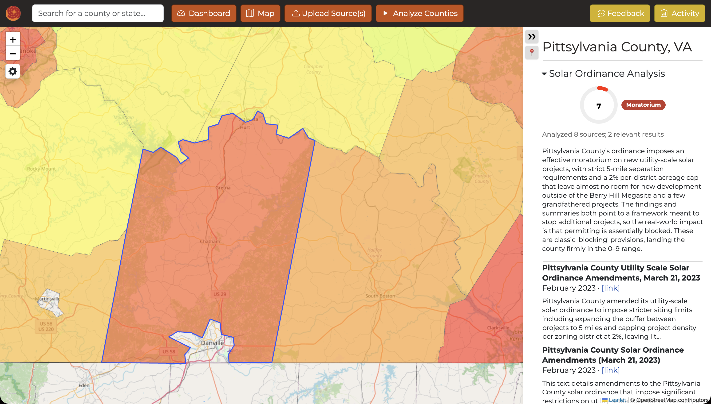
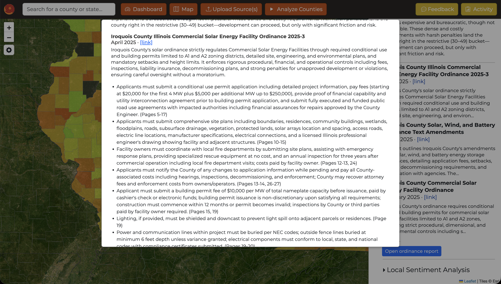

U.S. County Solar Ordinances & Sentiment Analysis Platform




→ scroll to see more →
Overview
Built during a summer internship at Strata Clean Energy, a leading utility-scale solar developer. The platform automates county-level solar siting risk assessment across the U.S. — work that previously required days of manual regulatory and market research per county.
The tool aggregates zoning ordinances, permitting requirements, land-use codes, local news, government announcements, county board meeting minutes, and public statements, then synthesizes findings into actionable risk scores viewable on an interactive national heatmap.
Technical Details
- Agentic AI pipeline: performs dozens of automated Google searches per county, crawls ordinance repositories and government sites, downloads and parses PDFs and webpages
- Multi-layer analysis pipeline: ordinance extraction, risk classification, sentiment modeling, and summarization
- Interactive map UI with county-level heatmap visualization — toggleable between ordinance, sentiment, and combined scores
- Satellite and street map views with overlays showing existing U.S. solar farms and Strata's project pipeline
- Per-county drill-down sidebar with AI-generated summaries, source links for verification, and detailed regulatory reports
- Dashboard view with score distribution charts, searchable/sortable county tables, and progress tracking across analyzed regions
- Feedback system for employees to flag incorrect data or AI interpretation issues
- Results propagate globally — any analysis triggered by one user updates the map, sidebar, and dashboard for all users
Outcome
Presented the application to stakeholders across the company. Led cross-functional meetings to evaluate additional AI use cases across departments. The tool is in active internal use at Strata for development strategy and risk assessment. Continued developing the platform as a project manager for the Duke Energy & Climate Club in Fall 2025.